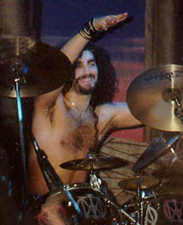

Top 13 Reasons DREAM THEATER kicks Cheeseryche's ass:
13) They don't write cheesy love songs. 12) Their "commercial-oriented" CD had a song about scum-sucking record execs. 11) They only charge $25 for a 3.5 hour set. 10) Mike actually adds relevant topics to the message board. 9) No Fan Club/Backstage Passes peddled at their concerts. 8) They play Fan Club shows FOR their fans, not to make money off them. 7) They released a CD (A.C.O.S.) because their fans WANTED it. 6) Their website is done by a PROFESSIONAL who knows what a proxy is for... 5) Their message board members don't have a cow if you talk about other bands. 4) They can actually PLAY their instruments. 3) John Petrucci never let anyone die on his front lawn. 2) You get a CD for being in the Fan Club, instead of a cheesy photo. And the Number 1 reason: 1) NO ONE on the DT board wants to suck James' dick or fantasizes about James singing lullabys to their children!
"Of course; that's just my opinion, I could be wrong." - Dennis Miller
Come see what other people are saying!
Want a YourName@GeoffTate.Com e-mail address? Send inquiries to: Xanadu@GeoffTate.Com